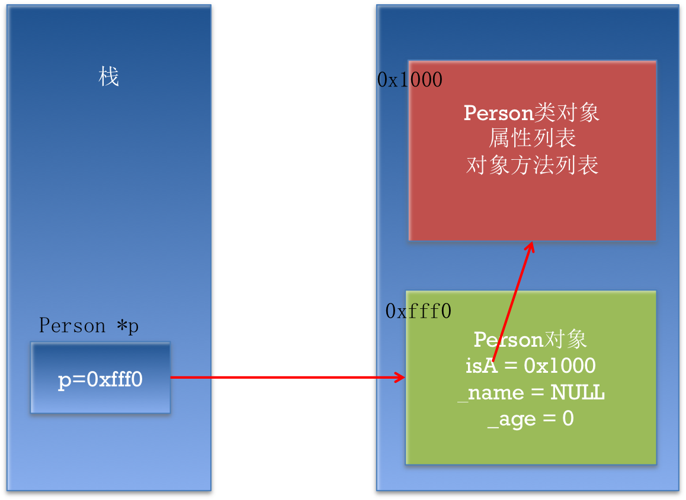

类的本质
本小节知识:
- 【了解】类的本质
- 【掌握】如何获取类对象
- 【理解】类对象的用法
- 【理解】类对象的存储
- 【了解】OC实例对象类对象元数据之间关系
1.类的本质
- 类的本质其实也是一个对象(类对象)
- 程序中第一次使用该类的时候被创建，在整个程序中只有一份。
- 此后每次使用都是这个类对象，它在程序运行时一直存在。
- 类对象是一种数据结构,存储类的基本信息:类大小,类名称,类的版本，继承层次，以及消息与函数的映射表等
- 类对象代表类,Class类型,对象方法属于类对象
- 如果消息的接收者是类名,则类名代表类对象
- 所有类的实例都由类对象生成,类对象会把实例的isa的值修改成自己的地址,每个实例的isa都指向该实例的类对象
2.如何获取类对象
- 通过实例对象
格式：[实例对象 class ];
如： [dog class];
- 通过类名获取(类名其实就是类对象)
格式：[类名 class];
如：[Dog class]
3.类对象的用法
- 用来调用类方法
[Dog test];
Class c = [Dog class];
[c test];
- 用来创建实例对象
Dog *g = [Dog new];
Class c = [Dog class];
Dog *g1 = [c new];
4.类对象的存储

5.OC实例对象 类对象 元对象之间关系
Objective-C是一门面向对象的编程语言。
- 每一个对象 都是一个类的实例。
- 每一个对象 都有一个名为isa的指针,指向该对象的类。
- 每一个类述了一系列它的实例的特点,包括成员变量的列表,成员函数的列表等。
- 每一个对象都可以接受消息,而对象能够接收的消息列表是保存在它所对应的类中。
在Xcode中按Shift + Command + O打开文件搜索框，然后输入NSObject.h和objc.h,可以打开 NSObject的定义头文件,通过头文件我们可以看到,NSObject就是一个包含isa指针的结构体,如下图所示:
NSObject.h
@interface NSObject <NSObject> {
Class isa OBJC_ISA_AVAILABILITY;
}
objc.h
/// An opaque type that represents an Objective-C class.
typedef struct objc_class *Class;
/// Represents an instance of a class.
struct objc_object {
Class isa OBJC_ISA_AVAILABILITY;
};
- 按照面向对象语言的设计原则,所有事物都应该是对象(严格来说 Objective-C并没有完全做到这一点,因为它有int,double这样的简单变量类型)
- 在Objective-C语言中,每一个类实际上也是一个对象。每一个类也有一个名为isa的指针。每一个类都可以接受消息,例如[NSObject new],就是向NSObject这个类发送名为new的消息。
- 在Xcode中按Shift + Command + O,然后输入runtime.h,可以打开Class的定义头文件,通过头文件我们可以看到,Class也是一个包含isa指针的结构体,如下图所示。(图中除了isa外还有其它成员变量,但那是为了兼容非2.0版的Objective-C的遗留逻辑,大家可以忽略它。)
runtime.h
struct objc_class {
Class isa OBJC_ISA_AVAILABILITY;
#if !__OBJC2__
Class super_class OBJC2_UNAVAILABLE;
const char *name OBJC2_UNAVAILABLE;
long version OBJC2_UNAVAILABLE;
long info OBJC2_UNAVAILABLE;
long instance_size OBJC2_UNAVAILABLE;
struct objc_ivar_list *ivars OBJC2_UNAVAILABLE;
struct objc_method_list **methodLists OBJC2_UNAVAILABLE;
struct objc_cache *cache OBJC2_UNAVAILABLE;
struct objc_protocol_list *protocols OBJC2_UNAVAILABLE;
#endif
} OBJC2_UNAVAILABLE;
因为类也是一个对象,那它也必须是另一个类的实例,这个类就是元类 (metaclass)。
- 元类保存了
类方法的列表。当一个类方法被调用时,元类会首先查找它本身是否有该类方法的实现,如果没有则该元类会向它的父类查找该方法,直到一直找到继承链的头。 - 元类(metaclass)也是一个对象,那么元类的isa指针又指向哪里呢?为了设计上的完整,所有的元类的isa指针都会指向一个根元类(root metaclass)。
- 根元类(root metaclass)本身的isa指针指向自己,这样就行成了一个闭环。上面说到,一个对象能够接收的消息列表是保存在它所对应的类中的。在实际编程中,我们几乎不会遇到向元类发消息的情况,那它的isa 指针在实际上很少用到。不过这么设计保证了面向对象的干净,即所有事物都是对象,都有isa指针。
- 由于
类方法的定义是保存在元类(metaclass)中,而方法调用的规则是,如果该类没有一个方法的实现,则向它的父类继续查找。所以为了保证父类的类方法可以在子类中可以被调用,所以子类的元类会继承父类的元类,换而言之,类对象和元类对象有着同样的继承关系。
- 元类保存了
下面这张图或许能够 让大家对isa和继承的关系清楚一些

- 上图中,最让人困惑的莫过于Root Class了。在实现中,Root Class是指 NSObject,我们可以从图中看出:
- NSObject类对象包括它的对象实例方法。
- NSObject的元对象包括它的类方法,例如new方法。
- NSObject的元对象继承自NSObject类。
- 一个NSObject的类中的方法同时也会被NSObject的子类在查找方法时找到。